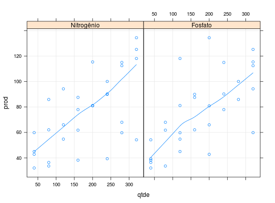

Dados de um experimento inteiramente casualizado em que a produtividade de milho é estudada segundo combinações de quantidades de nitrogênio (N) e fosfato (P2O5) utilizadas na adubação.
Um data.frame com 30 observações e 3 variáveis.
NP2O5prodPAULA (2004), Exemplo 2.5.2, pág. 144.
data(PaulaEg2.5.2)#> Warning: data set ‘PaulaEg2.5.2’ not foundstr(PaulaEg2.5.2)#> 'data.frame': 30 obs. of 3 variables: #> $ N : int 40 40 40 40 80 80 80 80 120 120 ... #> $ P2O5: int 40 120 200 320 40 80 160 280 120 200 ... #> $ prod: num 32.1 45 42.8 59.9 36.4 ...ftable(table(PaulaEg2.5.2[, c("N", "P2O5")]))#> P2O5 40 80 120 160 200 240 280 320 #> N #> 40 1 0 1 0 1 0 0 1 #> 80 1 1 0 1 0 0 1 0 #> 120 0 0 1 0 1 0 0 1 #> 160 1 1 0 1 0 1 0 0 #> 200 0 0 1 0 1 0 0 1 #> 240 1 0 0 1 0 1 1 0 #> 280 0 1 1 0 0 1 0 1 #> 320 1 0 1 0 1 0 0 1library(reshape2) da <- melt(PaulaEg2.5.2, id.vars = 3, variable.name = "adub", value.name = "qtde") library(lattice) xyplot(prod ~ qtde | adub, data = da, type = c("p", "g", "smooth"), strip = strip.custom( factor.levels = c("Nitrogênio", "Fosfato")))